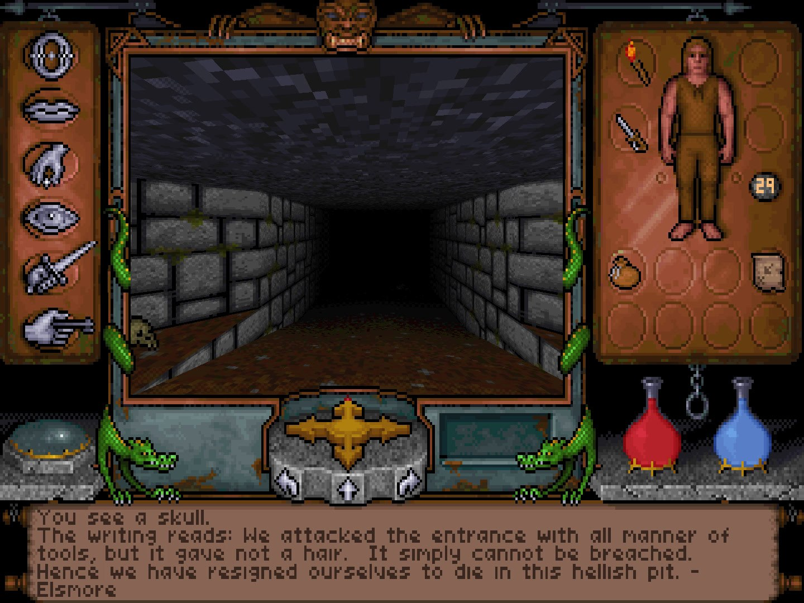
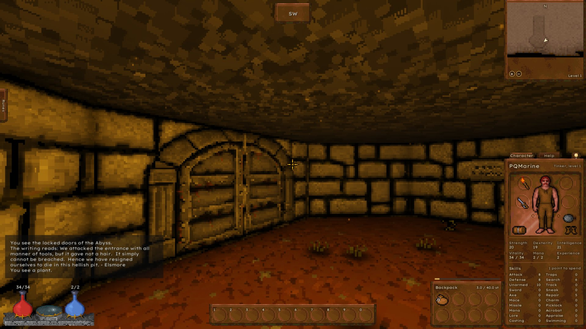
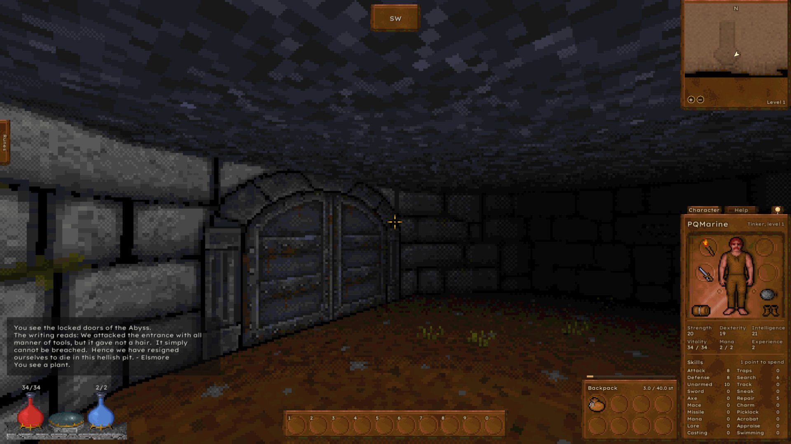
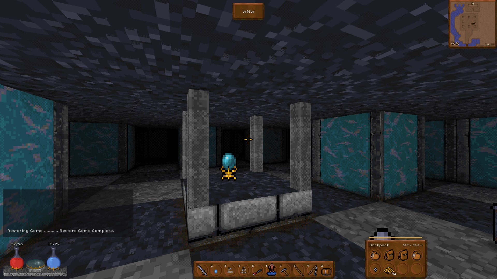
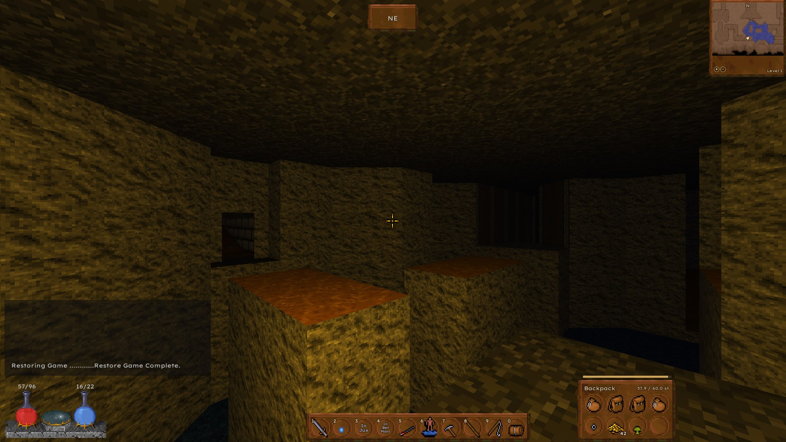
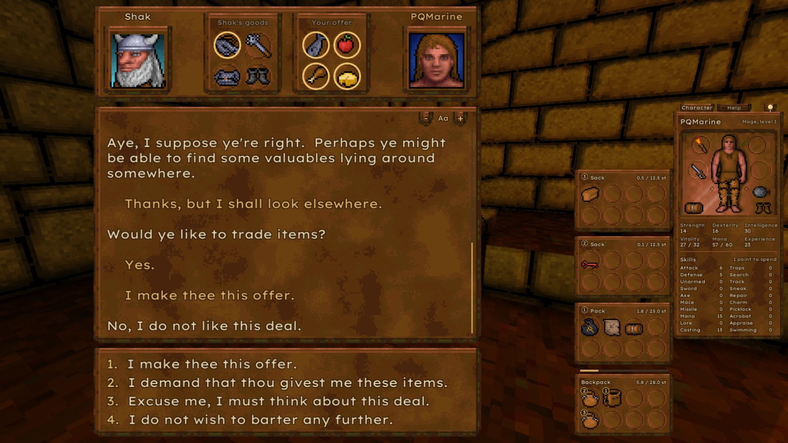
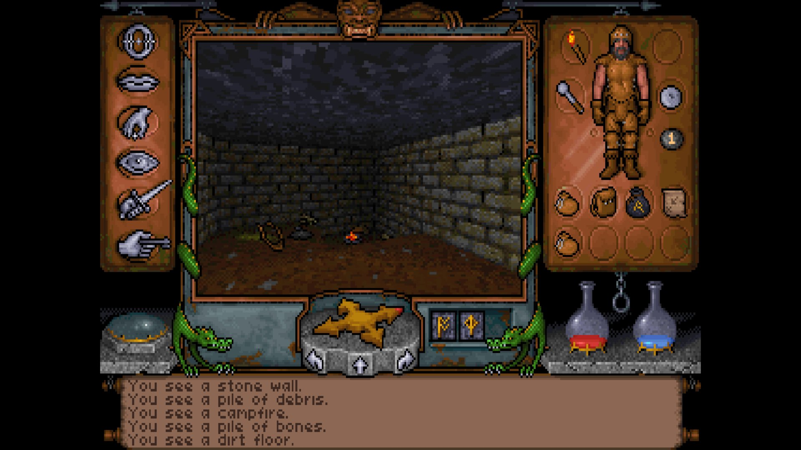
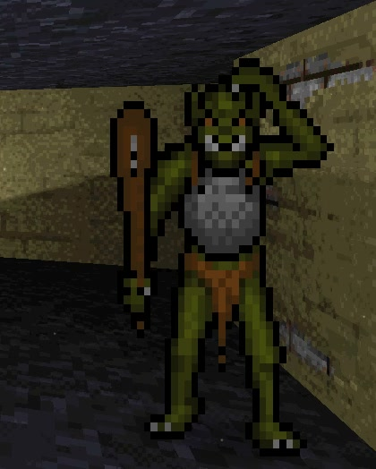
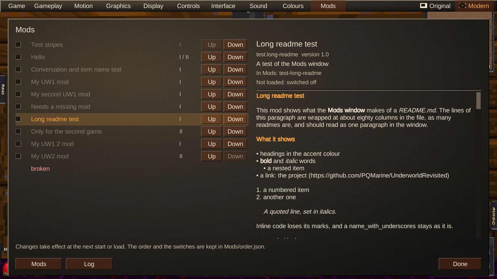

Complete
The Stygian Abyss 1992
From character creation to the end sequence, compared step by step with the original, with save games that go both ways.
Get it from the EA app, GOG.com or Steam.
Open source · Free · Windows & Linux
Ultima Underworld I and II, reimplemented in Unity and read straight from your own copies. Play the Stygian Abyss and the Labyrinth of Worlds exactly as they were, or with a modern face.
Needs your own Ultima Underworld I or II from the EA app, GOG.com or Steam. No game data included.
One engine, two games
Underworld Revisited plays both Ultima Underworld games, each by its own rules and read from your own copy. The main menu switches between them, and everything further down this page - the render modes, the interfaces, the help, the options - serves both.

Complete
From character creation to the end sequence, compared step by step with the original, with save games that go both ways.
Get it from the EA app, GOG.com or Steam.
In beta
Every rule, the music and the cutscenes built, the whole game played through and compared with the original, and its classic interface checked area by area.
Get it from the EA app, GOG.com or Steam.
Two lights, one dungeon
Drag across the picture. Palette computes light like the original, through its own shade and light tables. Remastered lights the same spot with Unity's URP: relief, glow, shadows and torch light, each switchable on its own. Both games have both modes.


Try it yourself
One room on level 2, three render modes, three steps of effects. Pick a combination, and press and hold the picture to see the same mode without effects.

Palette · Full Hold to compare with OffRemastered
Remastered lights the dungeon with URP. Its light burns warm like a torch. Too yellow for your taste? Turn it a little cooler, or all the way to neutral white.

Ultima Underworld II
A cell in the tomb of Praecor Loth, one spot in each mode - and Remastered here with its textures scaled by the pixel art scaler xBR.
Built against the originals
The rules are read from the originals' code and checked step by step against the games. All of this is there in both of them.

Doors, locks, traps and triggers, combat with the originals' tables, magic with runes, creatures with their goals and alarms, and conversations running the original bytecode, trading included - each game by its own rules.
Reads and writes the originals' SAVE1 to SAVE4. Carry a game
into DOSBox and back.
Ambient occlusion, grime, wall depth, glowing lava. Every pixel still a colour of the original's palette.
AdLib through an OPL2 emulation, General MIDI, a Roland MT-32 emulated by Munt, or recordings you supply, such as the high-quality remake by Pieces of 8-Bit's HQ Remakes (on Nexus Mods).
In both schemes, with a pointer on the stick, glyphs for Xbox, PlayStation, Nintendo and Steam Deck, every button rebindable.

The world at the original's 320x200 resolution or up to 4x, while the interface stays crisp.
Optional fixes for bugs of the originals that could cost you the game. Off, and they play exactly as they did.
Switch the interface language at once. Each game's own texts can be translated by language files.
An optional rules.json per game changes combat, magic, creatures, motion and
trade. Without it, the original's numbers.
Beside the view: stats with the hidden values and the worn magic, a live map, your notes, spells, mantras or teachers, and the game's manual.
Original runs the originals' motion code call by call, Smooth computes the same rules frame-rate independent, and Modern is an own character motor that slides along walls and keeps the view where you look, with the original's jumps, ledges and falls.
Windows 10 or newer, and a Linux build in every release since 0.3.0. The package brings its own runtime.
The intros, dreams and endings, played from the originals' own cutscene files.
Pointer steering or WASD
One spot in the dungeon, four faces, in both games. The game switches between them from its menu while you play: the original's frame at 4:3, the frame widened, its pieces set free, or a modern scheme with free mouse look. A layout editor moves and sizes every part.
Press Tab
A help window opens beside the view while you play: your stats with the hidden values, a live map with your notes, every spell and mantra (in the second game its teachers), the game's own manual, and the keys of the scheme you play with.
Make it yours
Every addition can be switched off, so the games play as they did. And some go where few remakes go: the whole game can pull apart the colours a colour vision deficiency cannot tell apart.

Colour vision
The same spot with each filter: the view, the frame, the character and the flasks all follow. And when a poison turns the health flask green, it can carry a hatch as well.
Under the hood
A handful of debug keys show what the game keeps hidden: the tile under your feet, the object under the crosshair, the traps and triggers where they lie, the game's own variables. They are off by default; "Debug keys on" at the end of the keyboard tab under Controls switches them on.
Make it your own
Mods go into the folder Mods beside the settings. Those made with the Underworld Editor (Avalonia) work as they are: changed items and values, conversations, music, another start. They are applied to a copy of the game's files, never to your installation, and each file is checked against the original it was made for.

Below and beyond
The whole game playable, from character creation to the end sequence.
Free mouse look, WASD, bags, an action bar.
The first Linux build, and motion on the original's own code.
Depth and light, every pixel in the original's palette.
Every window by stick, glyphs for every pad.
General MIDI and the Roland MT-32.
Classic Modular, Classic Wide, the view-angle slider.
German interface and a translation kit.
An own character motor, true to the original's jumps and falls.
Ultima Underworld II as a preview.
Optional fixes for bugs of 1992 that could end the game.
Ambient light and a light colour for Remastered, and translations that follow French and Italian articles.
The Classic preset at 4:3 in the modern scheme, bags in bags that keep their things, and the colour help across the whole screen.
Ultima Underworld from Steam and the game's manual, map and cluebook in the help.
The help's document buttons in two rows on narrow screens, and Tremor's boulders no longer hanging in diagonal walls.
The Classic preset in narrow windows and behind conversations, and in the Ultima Underworld II preview the motion spells, active spells and a bobbing view.
A smooth Controls window, the game's palette from uwdump for painting new art, saves on bridges loading where they were made, and many fixes in the Ultima Underworld II preview.
H hides the modern interface for an unobstructed look at the world, the message box can fade its lines, broken potions leave their debris as in the original, and an option removes the old debris spell exploit.
Mantras and spells your character learns are noted in the help, the lizardmen's words can show their meanings, skill raises can skip the dice or stay fixed against save scumming, and translations reach the words in the pictures and the cutscene subtitles.
A portable mode keeps everything in one folder beside the game, a mod folder is ready for the first packs, and the modern interface makes room: the character panel stands at the bottom, and the minimap, the bags and the flasks move aside where a panel opens.
A Mods window sets the load order and shows each mod's readme, mods made with the Underworld Editor (Avalonia) work as they are, save games remember their mods, and the control scheme has a switch of its own in the menu bar.
A locked door shows the key that fits it beside its name, the message scroll can be made wider, bows and slings shoot as fast as in the original, the title music ends as in the original, and more fixes from a tester's reports.
A bag opened again brings back the bags that were open inside it, Escape opens the menu at once after the last bag is closed, and a copy made portable with portable.txt takes your settings along.
The main menu can name a new version when one is out (an option, off by default), explosions and spell sparkles stand where the original draws them, a save made with Modern motion loads in the original without sticking in a wall, the message scroll can also be made narrower, and the second game's preview gains its area spells.
The game finds GOG and EA app installations by where the stores put them, the Game window lists every installation with its store and the save folder in use, saves in GOG's cloud folder are read the way the original's DOSBox sees them, a tall settings window stands in the middle of the screen, and the second game's preview gains its missile, target and thing spells, Enchantment and Roaming Sight.
In the modern scheme a lockpick no longer opens locked doors as if it were their key, Create Food and Summon Monster find no room in front of a closed door as in the original, and the second game's preview gains Create Food, Summon Demon, the rune traps, Magic Satellite, its colour cycling, swimming and lava.
What can be picked up follows the game's own data as in the original, a floor that rises or sinks takes a player standing still along, and things on shelves and tables are drawn in the original's order. The second game's preview gains its traps and triggers, switches, levers, keys and lockpicks, travel by the blackrock gem, and its beds, shelves and paintings as 3D models.
Mod managers and editors get what they need to work with the game: a features.json beside it that says its version and what it supports, a guide to the Mods folder and its load order, and a start option that tries a mod from a folder of its own. The second game's preview gains wands, potions and tools used from the pack, bags emptied onto the floor, owners who notice theft, vending machines, the sleep trap and moonstones for Gate Travel.
Ultima Underworld II becomes a playable alpha: every rule built and checked against the original, with its schedules, the story's deaths and the jail, the Pits of Carnage, its music and cutscenes. In both games 3D models, doors and orbs cast Remastered shadows, bridges no longer flicker at their edges, and in the modern scheme freeing the pointer can open the character panel, the rune panel and the bags, chosen in the new Interface window.
Things under a table or on a shelf can be taken again, dropping right in front of a barrel finds no space as in the original, and the name box of the character creation stands in the middle of the page. In the second game the gamepad works in the main menu and the creation, a new aid lets you walk through peaceful people, and a scroll looked at during a conversation shows its whole text.
Remastered can scale the walls, floors and ceilings with the pixel art scaler xBR, which gives them a painted look, and creatures, things and the weapon in the hand with rounded outlines and a hard edge. Things on a raised floor no longer show through the step up to it, and conversations name every entry of a list. In the second game the help shows the worn magic, the ice has a relief slider, and many fixes came from a play-through against the original.
The second game now has the first game's modern interface, drawn from its own art: the bags, the action bar, the rune panel, the character and stats pages, the presets Classic Modular and Classic Wide, and the layout editor. The classic screen's widescreen switch works in the second game too. Remastered draws its textures as the original's pixels, smooth or with xBR, for walls and things alike.
The second game's classic interface checked against the original, area by area: the view's height, the compass, the gargoyle's eyes, the flasks' bubbles, the messages of the bags and more now match it. Several fixes reach the first game too: the flasks, the map notes, the scroll's edges and the reach of the light in the Palette mode.
Ultima Underworld II is in beta: played through to the end and compared with the original, its classic interface checked, the modern interface the first game's. The gamepad reaches all its screens, its texts can be translated, and in Remastered its lava glows. For both games the water's relief now moves with its colours, and doors, bridges and plural names follow the original more closely.
A first fix for the UW2 beta: the modern conversation waits with [MORE] where the text asks for a page, as the classic scroll does, so a group conversation stops before each new speaker, and the small speaker heads no longer cover the text in the original font.
The first batch of a second cleanup: rules of Ultima Underworld II read again in the original and corrected, from the 20-second tick to the level change and the eight-position switch, and its hand's reach measured as the original measures it. Thrown things stay on the Prison Tower's level again, and Underworld Revisited's own texts come in Greek, from a translator.
Three steps
Install Ultima Underworld I (EA app, GOG.com, Steam), Ultima Underworld II (EA app, GOG.com, Steam) or both. Each store carries the same game files; other versions are not supported.
Grab the latest release for Windows (10+, 64-bit) or Linux (x86-64) and unpack it into a folder of its own.
Start UR.exe or UR.x86_64. It finds your EA app, GOG or Steam installations by itself, or asks once for the folder with game.gog or game.bin; Game in the main menu's menu bar switches between the two games. The Steam guide walks through it step by step.
Nothing is written to your installation. Save games stay compatible with the original.
Questions
Yes. Underworld Revisited contains none of the games' data: it reads the graphics, sounds, texts and levels from your own copy, Ultima Underworld I or II from the EA app, GOG.com or Steam (links below). Each game is sold on its own and is needed only to play it. Other releases are not supported.
Yes. It is free and open source under the MIT licence, and the code is on GitHub.
No. It runs natively on Windows and Linux and reads the originals' files itself; the DOSBox that comes with the EA app, GOG or Steam versions is not needed.
That is the aim. The rules are read from the originals' code and checked against the games, and save games go both ways. With the original scheme and the Palette mode they look and steer as they did, and every addition can be switched off. Where they still differ, the list of deviations says so.
Yes. The modern scheme has mouse look, WASD, an action bar and bags, on any screen width. The classic interface can be widened too, and a slider sets the view angle. Shift+F2 or the switch in the menu bar changes the scheme at any time.
Every release has a Linux build, tested less than the Windows one. The Steam Deck's buttons have their own glyphs, but the game has not been tried on a Deck yet; reports are welcome.
Yes. Mods go into the folder Mods, and those made with the Underworld Editor (Avalonia) work as they are. The Mods window sets their order and switches them on and off.
It is in beta: every rule, the music and the cutscenes are built, the whole game has been played through and compared with the original, and its classic interface was checked against the original area by area. It has the first game's modern interface too. Reports of differences to the original are welcome as issues.
How this was made
"I have been a fan of Ultima Underworld ever since it came out in 1992. In 2011 I came across uw-formats.txt and thought: why not give it a try? In 2012 the project fell asleep, and in 2026, with the help of Claude, I picked it up again."
The code is written by Claude (Anthropic's AI model, via Claude Code). PQMarine decides what to build, tests every behaviour against the original game and confirms or rejects the results.